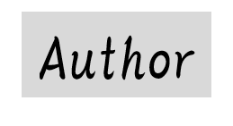
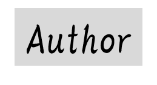

 Author|HY
Author|HY
Author（作者）
かなりのPCオタク()です。小さいころからPCの仕組みに興味を持ちその後、
ドはまりして今の状態です。ちなみにPCを初めて持った時のスペックはこれです。
今更思えば歴史を感じるPCでした。ここから、あのPCになるとは...
その後、タイミングを見計らい現在のPCを買いました。（某 工房）
ちなみにマウス・キーボードはノートPCのころ買ったものです。
一見すると進化の幅がすごいと感じる構成です。
KENWOOは、これまで価格など知らなかったのですが...すごいです。（1997ぐらいに製造というのもびっくりしました。年季ものですねw）
これからも大切に使っていきたいです。
ここまで結構金かけてきました。ちなみに今ドズブイパワーレポートにも、はまっいます。
そろそろ、ケース買いたくなってきたのでその時は、Blogで、写真もしくは、動画とかで公開することがあるかもしれません。
これから、どうぞよろしくお願いします。
以上。HY
©2021- HY かかか